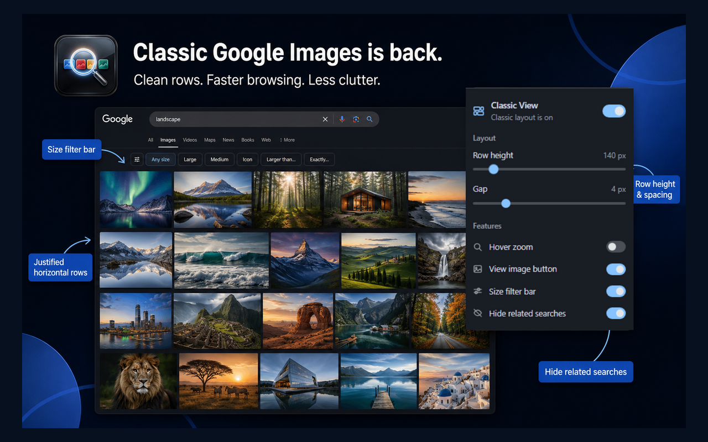
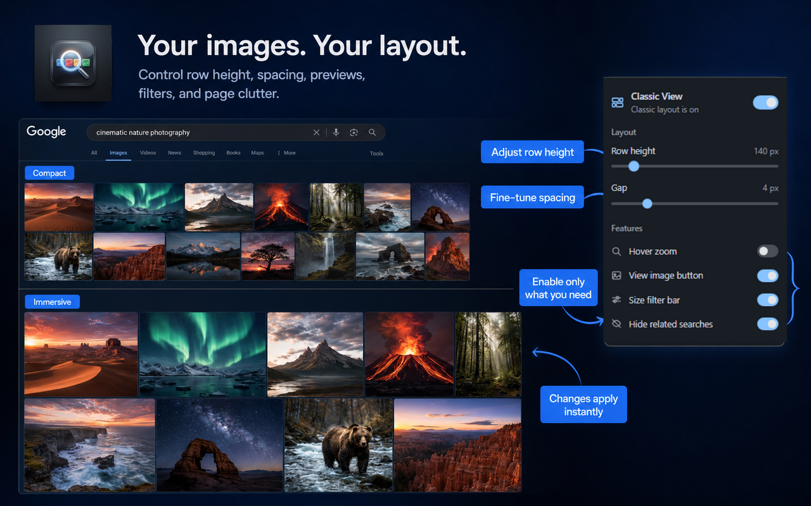

Classic Google Images was simple: search, get a dense but readable grid of thumbnails in horizontal rows, then open what you need. The current masonry layout prioritizes visual variety over scan speed.
Classic View puts that older browsing model back into Google Images without replacing Google Search itself. Results stay on Google’s page; only presentation and a few desktop helpers change.

Who classic Google Images is for
- Designers and creatives comparing references side by side
- Researchers scanning large result sets without constant crop surprises
- Shoppers checking product photos quickly before opening a site
- Desktop power users who want more useful images on screen and less related-search noise
What Classic View changes
Horizontal justified rows
Thumbnails sit in aligned rows. Aspect ratios stay natural, so portraits and landscapes are easier to judge.
Hover zoom and View Image
Preview a larger version on hover, then open the original image directly when you are ready.
Size filters and less clutter
Jump between All / Large / Medium / Icon and optionally hide related-search carousels so the page focuses on results.

Try classic Google Images again
Install the free extension, open Google Images, and search. No account, no tracking, and preferences sync through Chrome if you want the same layout on another profile.